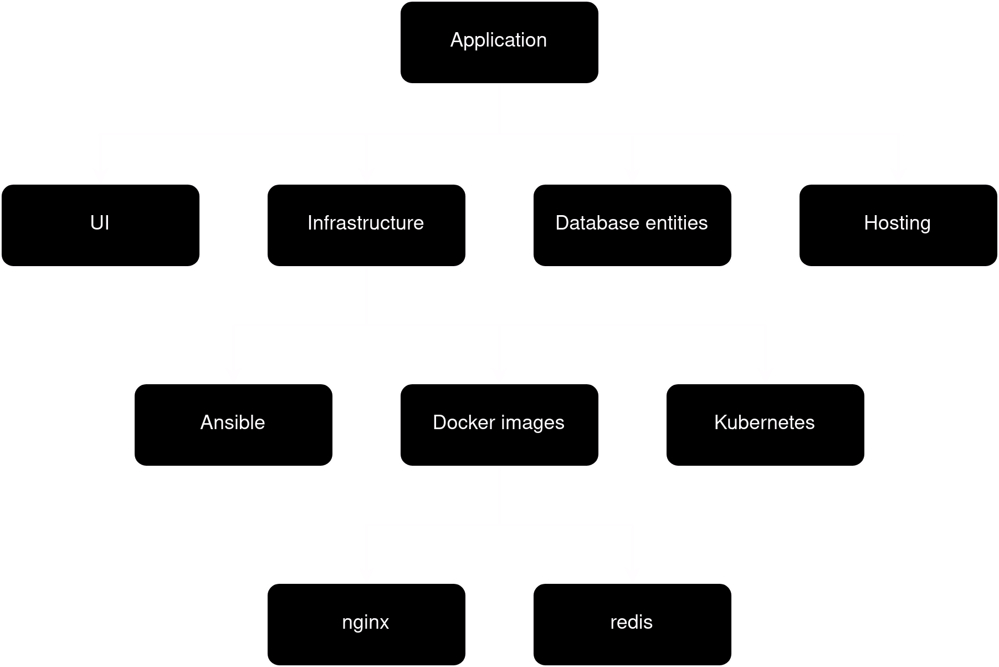
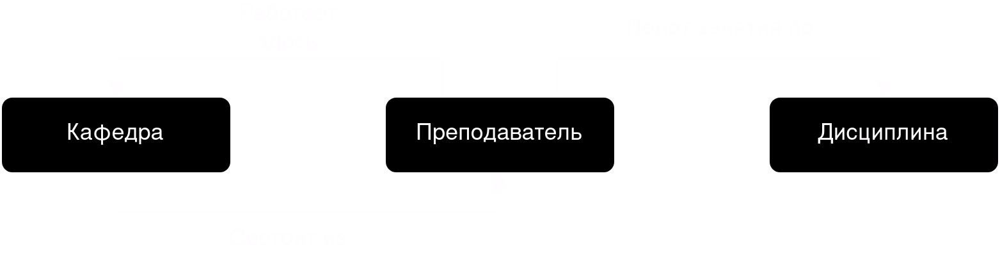
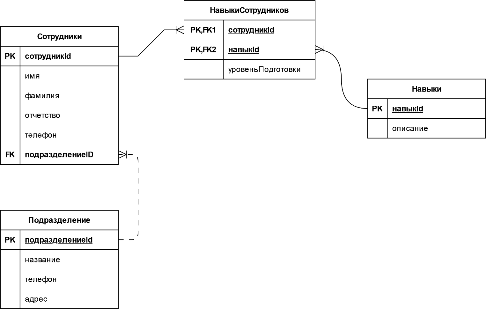

ВВЕДЕНИЕ В БАЗЫ ДАННЫХ
Основы проектирования баз данных
Кутиков Павел Алексеевич
email: kutikovpasha@gmail.com
socials: @ktkv419

Информационная система
система, реализующую автоматизированный сбор, обработку и манипулирование данными и включающую технические средства обработки данных, программное обеспечение и обслуживающий персонал
Банк данных
система специальным образом организованных данных, предназначенных для обеспечения централизованного накопления и коллективного многоцелевого использования данных.
Функции банка данных относятся
- хранение данных и их защита;
- изменение (обновление, добавление и удаление) хранимых данных;
- поиск и отбор данных по запросам пользователей;
- обработка данных и вывод результатов.
Базы данных
ядро банка данных и представляет совокупность взаимосвязанных и вместе хранящихся данных из определенной предметной области, организованных специальным образом и хранимых во внешней памяти (файлах базы данных).
Администратор базы данных
лицо, отвечающее за выработку требований к базе данных, её проектирование, реализацию, эффективное использование и сопровождение, включая управление учётными записями пользователей БД и защиту от несанкциониро
Целостность БД
свойство БД, означающее, что база данных содержит полную и непротиворечивую информацию, необходимую и достаточную для корректного функционирования приложений
Система управления базой данных
СУБД
совокупность языковых и программных средств, предназначенных для создания, ведения и совместного использования БД многими пользователями
Функции СУБД
- перевод схемы, описанной на языке структуру данных в некоторое внутреннее представление
- создание БД (загрузка данных в БД);
- обновление некоторой части БД без изменения структуры данных;
- обеспечение защиты данных и приоритетов в их использовании
Примеры СУБД
MySQL
PostgreSQL

SQLite
Oracle Database
Примеры СУБД

MongoDB

Redis
Модели данных
некоторая абстракция, в рамках которой данные оформленны, которая позволяет пользователям и разработчикам трактовать их как информацию и взаимосвязь между ними
Иерархическая модель
в виде древовидной структуры
Сетевая модель
в виде сетевой структуры, когда любой элемент может быть связан с любым другим элементом
Реляционная модель
предполагает использование двумерных таблиц (отношений), связь между которыми осуществляется посредством значений одного или нескольких совпадающих полей
Требования к БД
Полнота данных
должна обеспечивать полное и адекватное описание предметной области
Требования к БД
Непротиворечивость данных
должны проверяться на правильность при вводе, существует запрет на дублирование данных
Требования к БД
Целостность данных
- правильность ссылок между таблицами
- блокировка модифицируемых записей, при одновременной работе с БД
- механизм транзакций (последовательность операций над БД), позволяющий вернуться на несколько шагов назад
Физическая архитектура БД
Локальные базы данных
Располагаются на компьютере, на котором работает пользователь
Физическая архитектура БД
Централизованные базы данных
хранится на центральном компьютере, пользователи и прикладные программы имеют удаленный доступ к базе данных